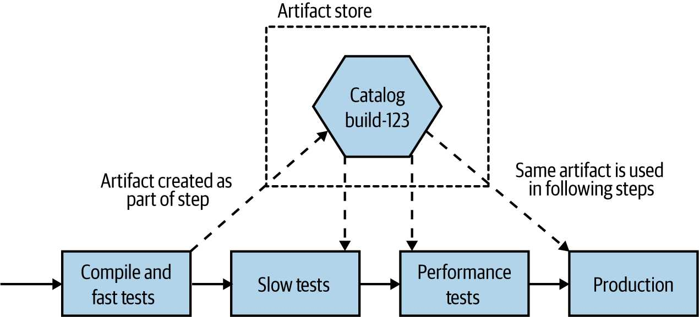

شکل 7-4. همان artifact در هر محیط مستقر میشود
اگر قرار است از همان artifact در محیطهای مختلف استفاده شود، هر جنبهای از پیکربندی که از محیطی به محیط دیگر متفاوت است، باید خارج از خود artifact نگهداری شود. به عنوان یک مثال ساده، من ممکن است بخواهم application logs را طوری پیکربندی کنم که همه چیز در سطح DEBUG و بالاتر در هنگام اجرای مرحله Slow Tests ثبت شود، و اطلاعات بیشتری برای تشخیص دلیل شکست یک test به من بدهد. با این حال، ممکن است تصمیم بگیرم که این را به INFO تغییر دهم تا حجم log را برای Performance Tests و استقرار Production کاهش دهم.
یک deployment artifact را برای microservice خود، فقط یک بار بسازید. از این artifact در هر جایی که میخواهید آن نسخه از microservice خود را مستقر کنید، مجدداً استفاده کنید. deployment artifact خود را environment-agnostic نگه دارید—پیکربندی خاص محیط را در جای دیگری ذخیره کنید.
ما قبلاً به یک موضوع نگاه کردیم که میتواند جناحهای متخاصم را هیجانزده کند—توسعه مبتنی بر feature branching در مقابل trunk-based—اما مشخص میشود که این بحث برای این فصل تمام نشده است. موضوع دیگری که احتمالاً نظرات بسیار متنوعی را برمیانگیزد، سازماندهی کد برای microservices ما است. من ترجیحات خاص خودم را دارم، اما قبل از اینکه به آنها بپردازیم، بیایید گزینههای اصلی را برای نحوه سازماندهی کد برای microservices خود بررسی کنیم.
اگر ما با سادهترین گزینه شروع کنیم، میتوانیم همه چیز را با هم جمع کنیم. ما یک مخزن واحد و عظیم داریم که تمام کد ما را ذخیره میکند، و ما یک build واحد داریم، همانطور که در شکل 7-5 میبینیم. هر check-in به این مخزن کد منبع باعث میشود که build ما فعال شود،